Mapas do Valorant
Os mapas de Valorant são todos pensando para partidas multiplayer e cada um possui características diferentes que os tornam únicos. A Riot Games usou toda sua experiência com League of Legends para criar mapas realmente diferenciados, com várias possibilidades de acesso e várias posições interessantes. Os mapas de Valorant podem possuir portas interativas, teletransportes, cordas e tirolesas para locomoção, alterando a estratégia em relação a outros FPS atuais.
Valorant atualmente conta com 7 mapas com desenhos bem diferentes e até mesmo mais bombsites, alguns mapas podem dar ênfase a alguns agentes como também podem mudar o seu tipo de arma. Existem mapas em Valorant também que são focados em um combate mais fechado e locais bem abertos para uma trocação a longa distância. Atualmente existem 7 mapas em Valorant, sendo eles Fracture, Breeze, Icebox, Bind, Haven, Split e Ascent.
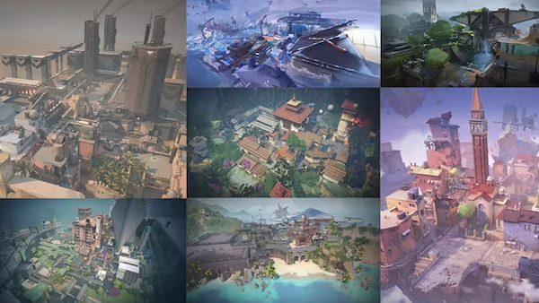
Breeze
A paisagem paradisíaca nos triângulos das Bermudas, Breeze, é um mapa de Valorant que exige realmente de um trabalho em equipe no Valorant. Breeze é um mapa bem aberto, então para você trafegar pelo meio do cenário estrategicamente, precisará de todos juntos usando suas habilidades e não simplesmente fechando um corredor.
Além disso, pelo mapa ter áreas bem amplas, privilegia armas de longo alcance, mudando um pouco a estratégia de compra de armas. Os combates principais em Breeze geralmente acontecem entre o bombsite B e principal e do lado do bombsite A, entre as pirâmides e a caverna.
Se o vídeo não estiver funcionando: Breeze/youtube.com
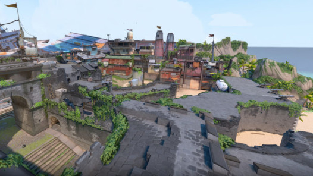 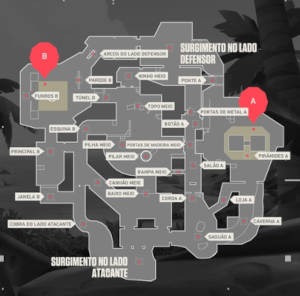
Icebox
Icebox é um mapa de Valorant lançado junto à agente Skye no Ato 3 do game, o mapa representa um porto congelado em Bennet, uma ilha russa. O mapa tem pontos bem marcado pela verticalidade e apresenta também cordas horizontais, sendo tanto de fácil defesa como também de fácil ataque. Em geral, Icebox é um mapa atualmente bem equilibrado, oferecendo uma boa trocação nos bombsites e nos arredores do bombsite A. Vale ressaltar que o mapa apresenta passarelas que vão fazer você mirar mais na vertical (sendo que Valorant é bem horizontal) e coberturas para se esconder.
Se o vídeo não estiver funcionando: Icebox/youtube.com
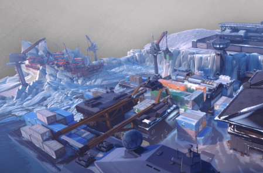 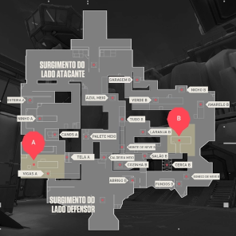
Bind
O mapa Bind do Valorant é icônico e está desde a fase Beta do jogo. Com um estilo único, praticamente sem meio, Bind proporciona uma leve vantagem aos defensores. Desde que o lado atacante fica bem distante dos bombsites e existem poucos acessos a eles, forçando a equipe a fazer a escolha de um dos lados para entrar. Como os locais para plantar bomba são distantes, a mágica do mapa rola em torno dos portais que conectam áreas no centro de Bind e perto dos saguões nas extremidades do mapa. Oferecendo boa vantagem para os agentes sentinelas de Valorant pela rápida mobilidade. Estas ligações dos transportadores além de passar os jogadores também passam projéteis, como granadas, sendo algo bem interessante para iniciar um confronto se bem pensado.
Se o vídeo não estiver funcionando: Bind/youtube.com
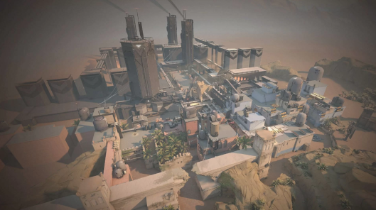 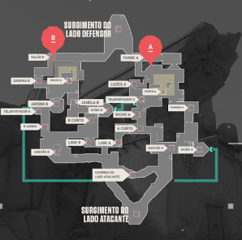
Haven
Haven é um mapa de Valorant marcado por ter 3 locais para plantar o spike, A, B e C. Apesar de isto parecer uma grande vantagem aos atacantes, sabendo dosar bem a estratégia e os callouts do mapa, é um mapa de rápida locomoção entres os bombsites do mapa. Isto ocorre porque B tem rápido acesso aos outros locais através de Link A e Link B, por isto, o local B em Haven é crucial para a movimentação da equipe defensora. A boa comunicação da equipe é essencial em Haven, pois é preciso distribuir os personagens nas diferentes posições dos bombsites, já que o ataque tem várias possibilidades para armar o spike durante as partidas. Desta maneira os defensores devem manter uma boa comunicação com as equipes espalhadas em pelo menos 2 lugares.
Se o vídeo não estiver funcionando: Haven/youtube.com
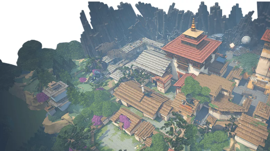 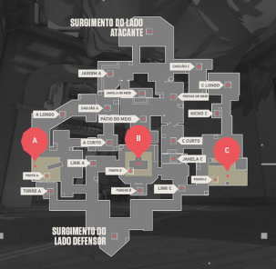
Split
Split é um mapa que apresenta combates em corredores e também uma grande verticalidade, com acesso a cordas para se locomover. O mapa Split de Valorant tem até um local mais aberto para combate como o site B, porém ele é de difícil acesso e bem aberto para o lado atacante, privilegiando estratégias do lado defensivo. O lugar, onde mais o lado atacante tem equilíbrio no combate é no site A, com o principal ponto de controle a ser considerado a zona principal A. Como visto no mapa de Split, o jogo apresenta vários corredores um tanto longínquos que valorizam snipers em boas posições durante a partida, como já citado, a Riot Games criou mapas com detalhes que os tornam muito diferentes.
Se o vídeo não estiver funcionando: Split/youtube.com


Ascent
Ascent é um mapa de Valorant localizado na Itália e foi lançado junto ao lançamento oficial do FPS da Riot Games no dia 2 de junho. O mapa tem um meio bem grande, sendo um lugar onde ocorre muita trocação de tiros, sendo crucial na estratégia inteligente do lado defensor, já que se dominado, fica fácil rotacionar entre os flancos atacantes em A e B. Ascent também possui portas interativas perto dos bombsites, que podem ser fechadas sendo uma das possibilidades nas estratégias dos defensores, porém elas podem ser destruídas em cada partida.
Se o vídeo não estiver funcionando: Ascent/youtube.com
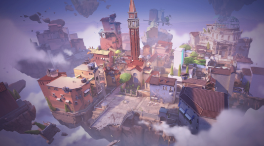 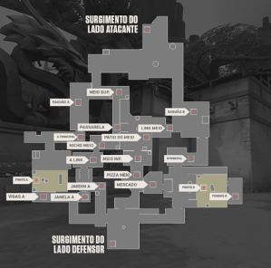
Fracture
O mapa Fracture foi o sétimo mapa lançado em Valorant (na atualização 3.05) e representa um centro de pesquisa secreto na cidade de Santa Fé do estado de Novo México dos EUA. O mapa de Valorant é inovador ao trazer o surgimento do lado defensor ao centro, junto a tirolesas que podem lhe conectar de um lado ao outro do mapa. Vale lembrar que os locais para armar o Spike ficam em lados opostos, apesar da distância entre ambos, existem 3 rotas e 4 entradas de conexão fácil, para atacantes e defensores. Agentes como Viper, Killjoy e Chamber são ótimos pelo controle de área em Fracture
Se o vídeo não estiver funcionando: freacture/youtube.com
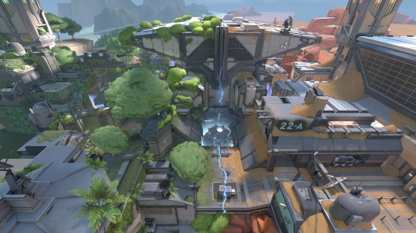 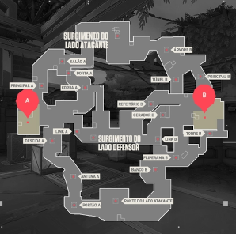
Pearl
O Ato 1 do Episódio 5 do Valorant chegou nesta semana ao FPS da Riot Games. A grande novidade da temporada é o mapa Pearl, que se passa em uma cidade subaquática. Brian Yam, líder de arte e conceito da Riot Games, falou como foi a criação do mapa e explicou a inspiração de Pearl. Além disso, o mapa subaquático ficará no lugar da Split na rotação de mapas no competitivo, na fila ranqueada e no sem classificação. A inspiração para o Pearl surgiu a partir de um antigo tema subaquático que tínhamos. Combinamos ele com um tema mais novo, que girava em torno de uma grande cidade inundada pelas mudanças climáticas. Os conceitos foram criados explorando essas duas ideias e, quando determinamos que ele seria situado em Portugal, todos ficaram muito animados devido ao potencial visual histórico e arquitetônico do lugar - explicou Yam. Como o Pearl fica na "Terra Ômega", queríamos explorar como Kingdom de lá abordaria as mudanças climáticas e como transmitiríamos essa ideia visualmente. Mostrar como cidades submersas funcionam parecia ser a direção visual ideal que deixou todo mundo empolgado. É uma bela justaposição visual das estruturas da Kingdom Industries com estruturas mais antigas de Portugal - finalizou. Para celebrar a adição de Pearl, a Riot Games lançou o Passe de Evento, Crossover, que segue a temática do mais novo capítulo da história dos agentes e procura relembrar os jogadores de como era quando o jogo foi para o espelhoverso pela primeira vez. O passe gratuito já está disponível e possui sete níveis com recompensas como títulos, cards e Radianita.
Se o vídeo não estiver funcionando: Pearl/youtube.com
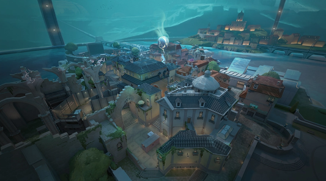 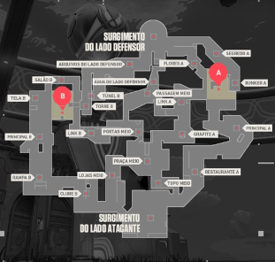